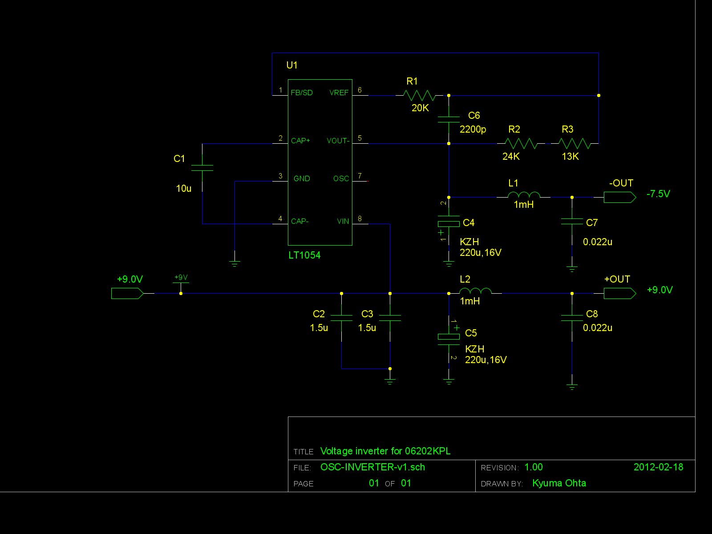
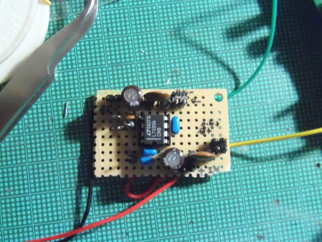
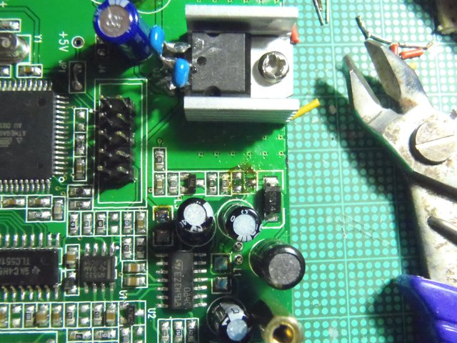
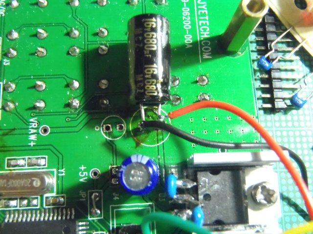
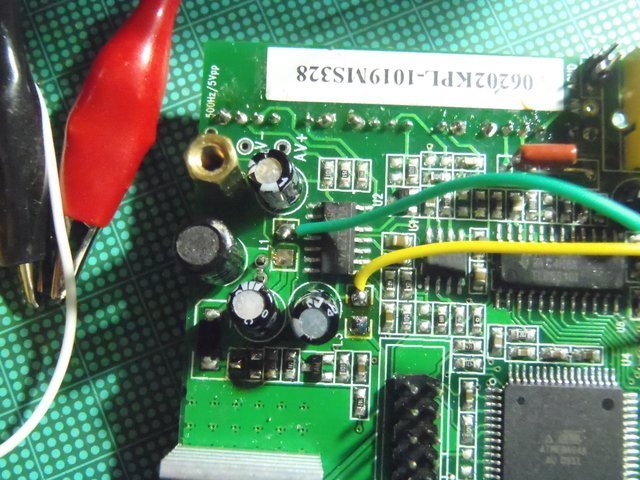
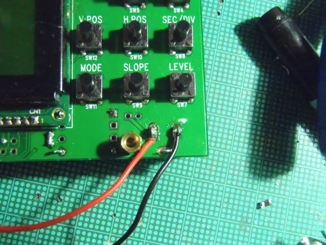
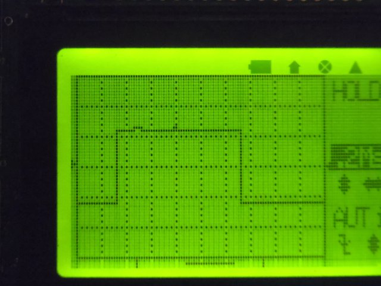
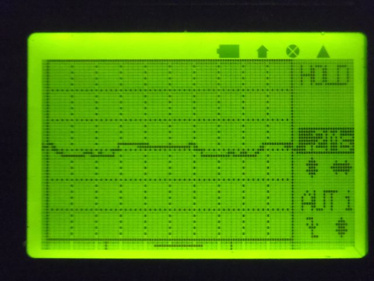
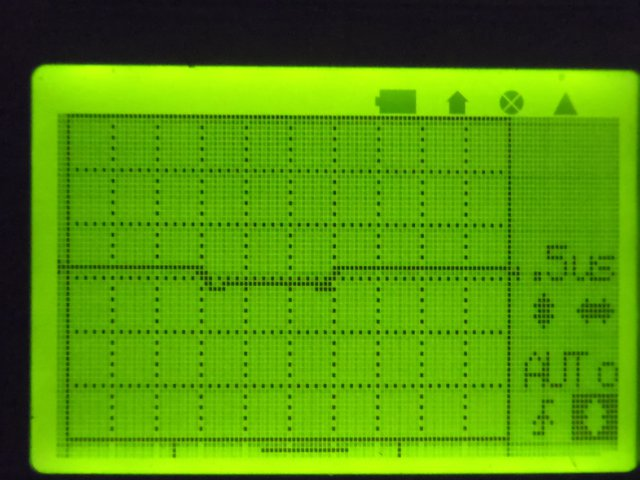

Sorry, under construction and Japanese only,Yet...
オシロスコープキットを改造する。その１(2012-02-18)
もくじ
何を改造したいのか？
どう改造するのか？
電圧インバータ部分
インバータを組み込む
おまけ
コンデンサについて
オシロスコープ本文に戻る
電子工作系もくじへ
全体目次へ
何を改造したいのか？
このオシロスコープ、アナログ系が弱いようでテスト信号の方形波を測定すると縦±１ドットの範囲でぶらつきます。
既に先人が入力オペアンプの入力周りや電源周りのコンデンサを総入れ替えする改善を行なっていますが、
又々液晶を取るというのも非常に面倒くさい（基板焼かないようにするためにすっごく神経使います）ので、別のアプローチをしてみよう。
そう思い立ちました。
どう改造するのか？
メーカーサイトを丹念に見ていくと回路図(Schematic)がありますが、
U1とU2の電源であるAV+,AV-の内、負の電圧が必要なAV-をCPUからのタイミング信号でスイッチングする電圧コンバータで作っています。(Q1,Q2,L1〜L3のあたり)
なので、AV-を電圧インバータで作りなおしてやろうと言う方向性を試して見ました。
電圧インバータにはLT1054を使ってみました。これは、秋月電子でもDIP8ピン型が入手できます。
勿論、電圧インバータを挿入するために、本体の部品を外します。表面実装部品のデバッグに自信がない人はやめたほうがいいと思います
電圧インバータ部分
まず、電圧インバータ部分を作りましょう。
回路図
回路図は、メーカのデータシートのP.10「標準的応用例」の中の「基本的な電圧インバータ／レギュレータ」そのまんまです(^_^;
但し、タンタルコンデンサは使わずになるべく積層セラミックコンデンサで組んでいます。
今時は47uFと言う大きなものも積層セラミックでできているので、使わない手はない（これは流石に高価ですが、今回使った10uF辺りまでだと一個百円しないので無理な価格ではない)。
100uFだけは流石にスイッチング電源用の電解コンデンサの220uFを使っています。
インバータを組み込む

インバータ部分の基板が出来て、電圧も目的通り出てることを確認しました。次は、これをオシロに組み込みましょう！

Q1,L2,L3を外します。一度ハンダを垂らして部品をハンダの海に浮かばせて、ピンセットで取る。
ついでに、U3の両側に0.1uFのセラミックコンデンサをつけました。

更に、入力コンデンサを手元にあったマザーボード用の680uF,16Vに（きわどいけど）

インバータ基板の出力(黄色：AV+,緑:AV-)を本体につなぎましょう。接続先は一度外したL2,L3の出力側です。

インバータ基盤の入力を電源ジャックから取ります。
さて、基準信号を撮り直してみましょう

少し改善したけど完全じゃない(´・ω・｀)
まぁ、安物スイッチング電源を主電源に使ってるしこんなものだろうと当面諦めます(´・ω・｀)
おまけ
ついでにファームウェアもアップデートしたので（あとで書く）、LED照明の電源の波形を撮り直しました。

リップル(縦軸は0.1V/div)

ノイズ(縦軸は0.1V/div)
コンデンサについて
五年以上前だと表面実装での大容量コンデンサといえば大きなケミコンか中くらいの大きさで基板上のスペースは喰わないタンタルコンデンサが主流で、
ケミコンで47uFとか100uF買うよりもタンタルは価格的に手頃ではあるんだけど故障モードが短絡なので電源系に使いにくいという問題がありました。
大体のメーカは設計時の基準に「電源系にタンタルを使わないこと、使う場合はヒューズ付きを使うか応相談」としています。
その上、タンタルは所謂レアメタルで供給が不安定な上に主な採掘地のコンゴなど中央アフリカ地域での内戦の原因になったり、奴隷労働が横行したりと問題がありすぎる状態にあります。
最近はケミコンだけでなく高分子系の素材を使ったコンデンサに於いても大容量・小型でESR値もタンタル並みに
低いコンデンサが多く出ていて、タンタルよりも安価になっています。しかしこれも未だ少し大きい上に耐圧が低めの物が多いです。
これらのものはコンピュータの電源の二次側やマザーボードのような比較的低い電圧に使われることが多い。
最近になって積層セラミックコンデンサも大容量化が進んで、47uF〜100uF程度まで商品化されています。
これはESR値が極めて低く、35V以上の耐圧を兼ね備えてスペースも喰わないと言ういいことづくめの物です。但し、物性上機械的に弱かったり湿気や温度に敏感だったりする場合も少なくないので、そこは適材適所という事で。
本ドキュメント・及びノウハウは CC BY SA v3.0で公開します。
CC BY SA v3.0で公開します。
実装技術等の特許登録はこれを禁じます。(DO NOT PATENT THIS TECHNIQUES)
後日問題が出た場合は変更の可能性あり。
LED-INVERTER by http://sky.geocities.jp/artanejp/ELECTRONICS/
is licensed under a Creative Commons
Attribution-ShareAlike 3.0 Unported License.
オシロスコープ本文に戻る
電子工作系もくじへ
全体目次へ
Last Update: 18 Feb.2012 by Artane. ( whatisthis.sowhat _a_t gmail.com )